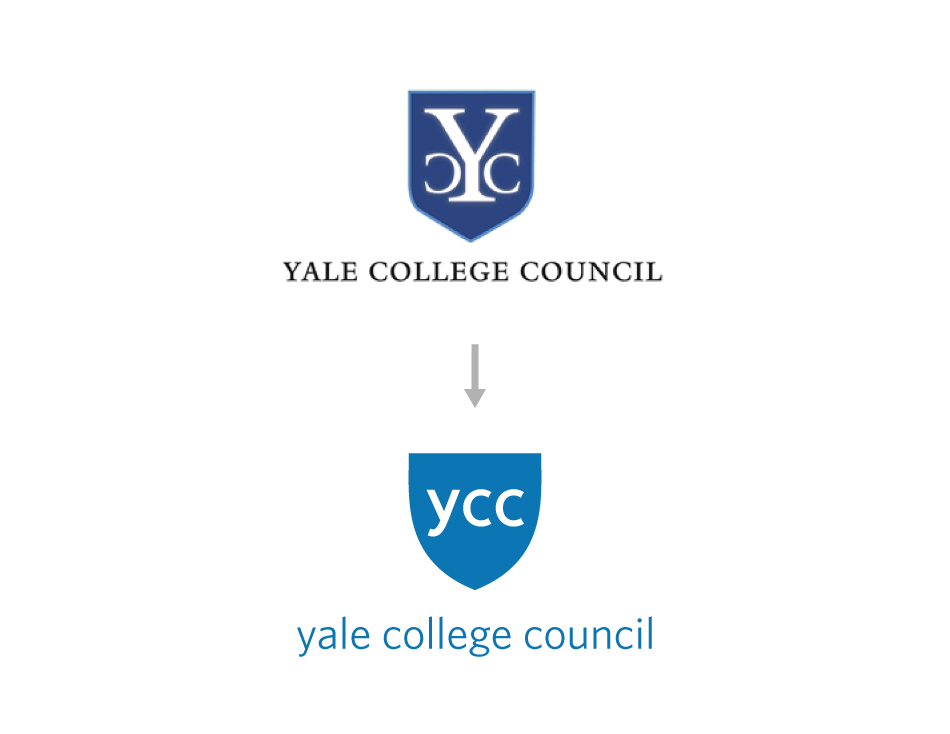
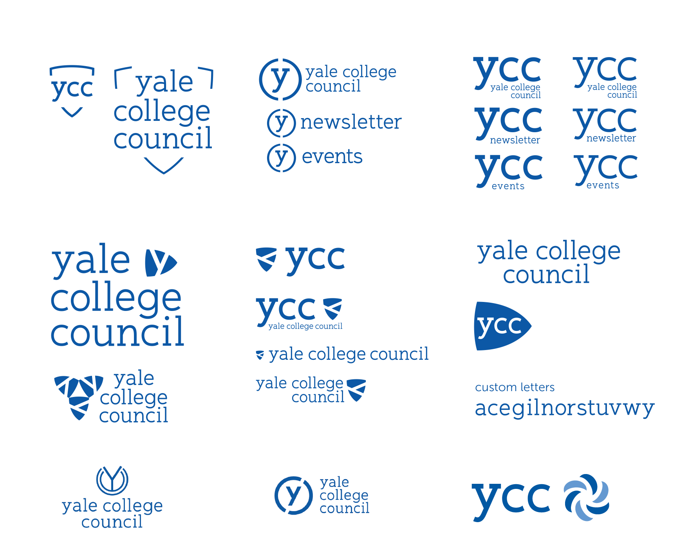

As a member of the 3-man YCC Graphic Design team, I made graphics for the weekly newsletter, posters and the website. We also completely rebranded YCC with a semester-long process of back and forth with the YCC members.
After exploring more abstract and complex designs, the logo we settled on after focus groups and council votes, was my iconic shield design, which kept ties to the older logo but added an air of modernity and openness as the council requested. YCC wanted a logo that evoked: Accessible, Active, Reform/Change, Community, Comprehensive, Cohesive, Inclusive, Practical, Modern, Transparent.

